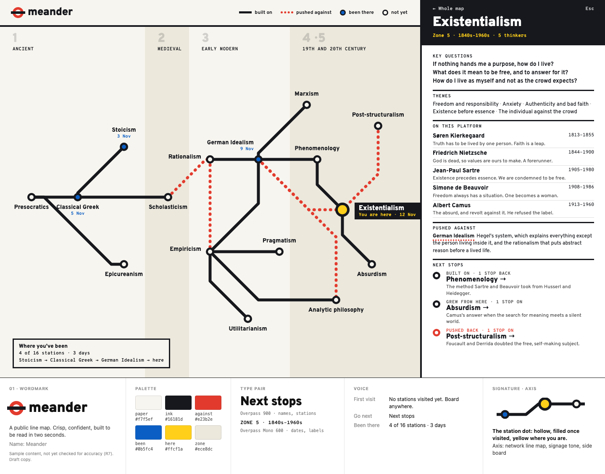
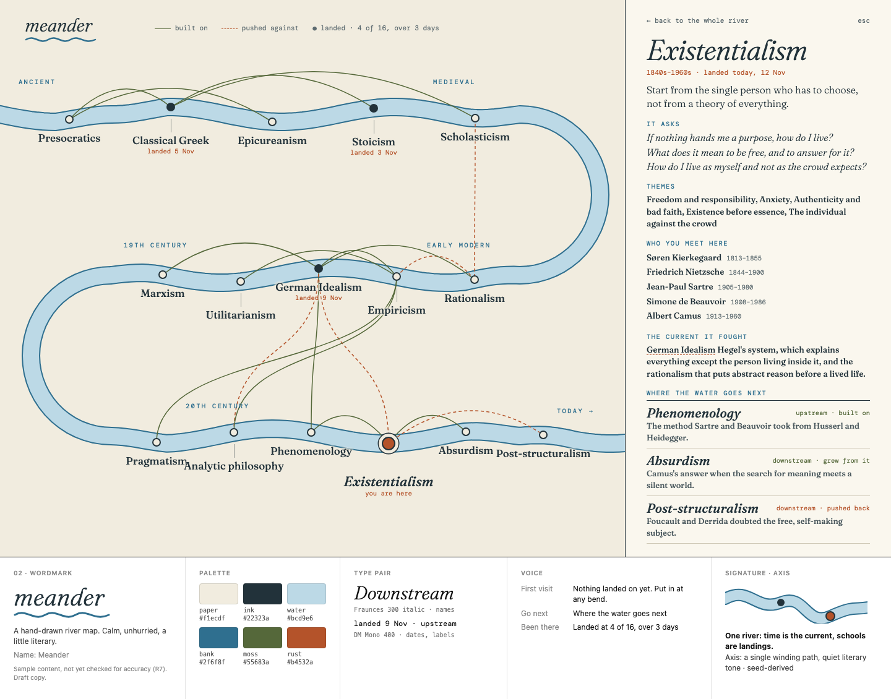
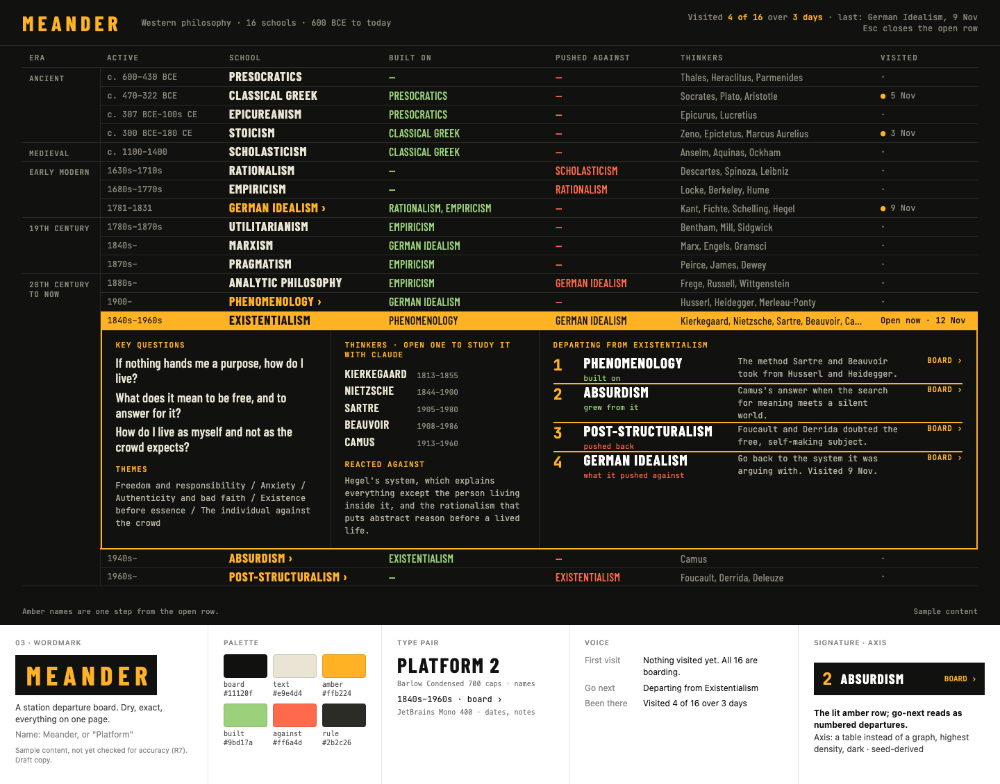
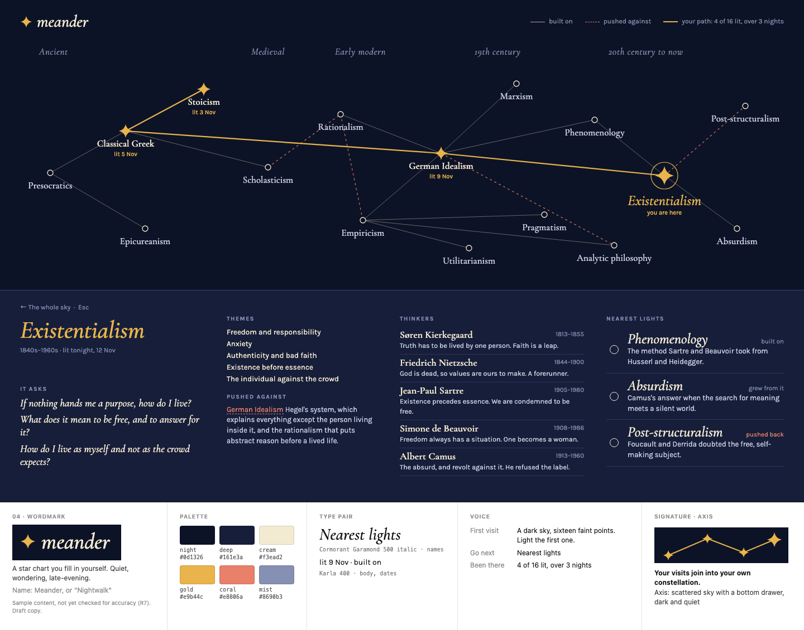
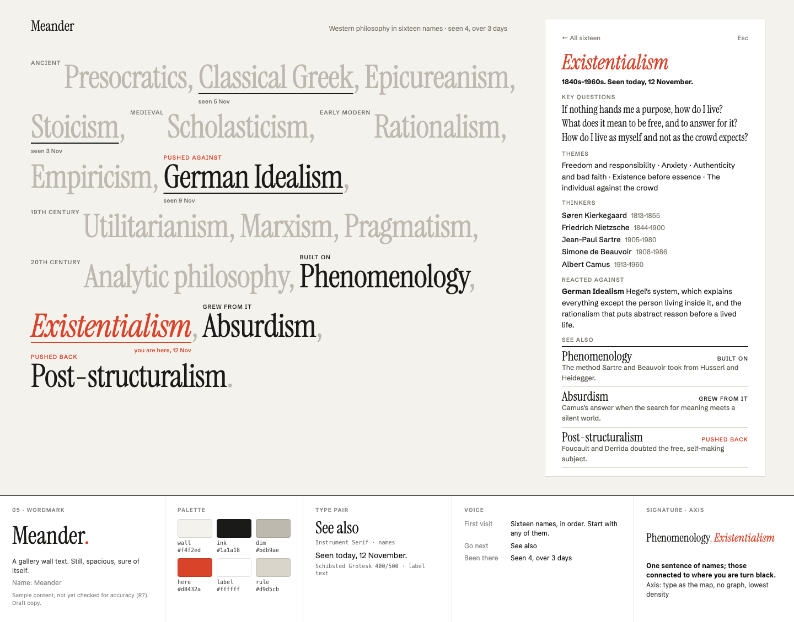
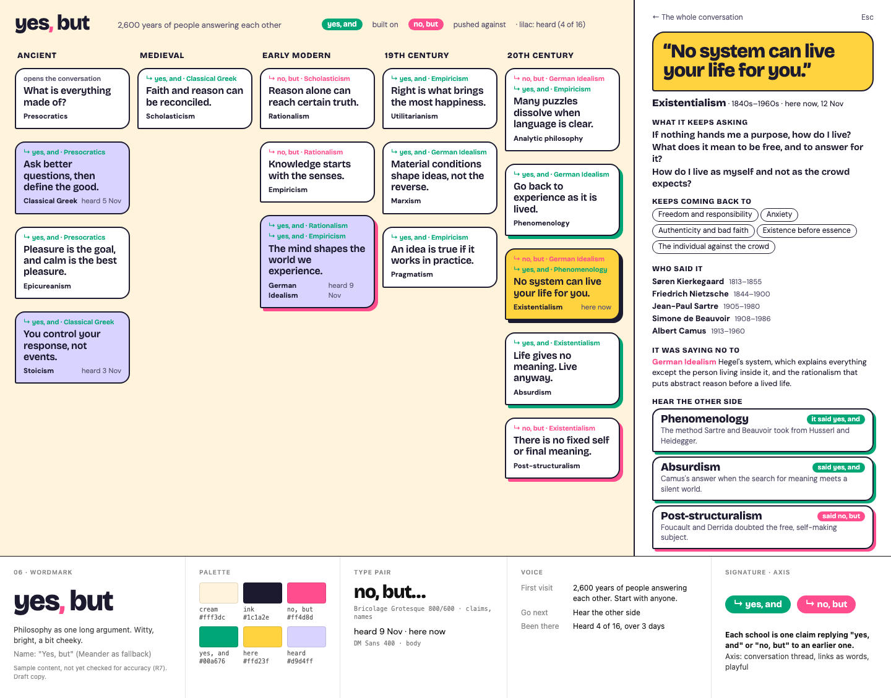
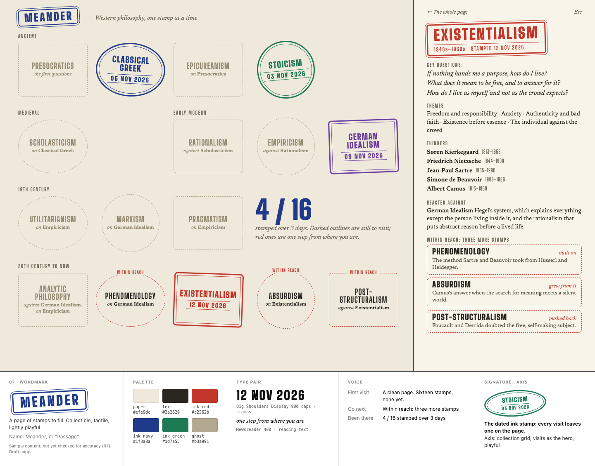
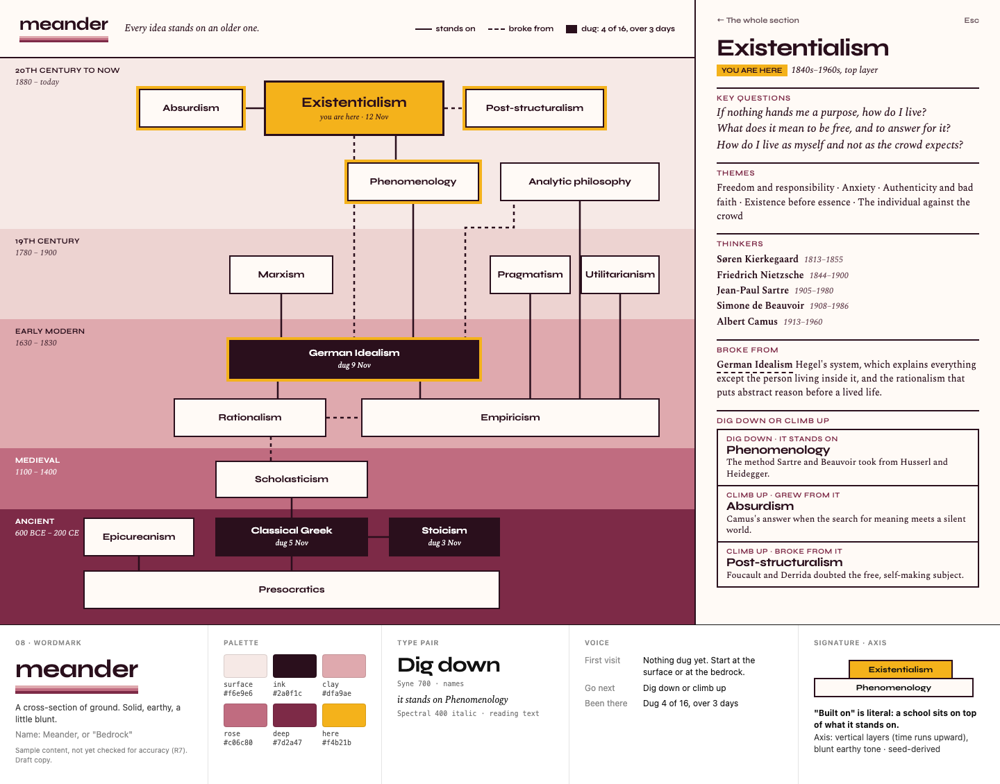
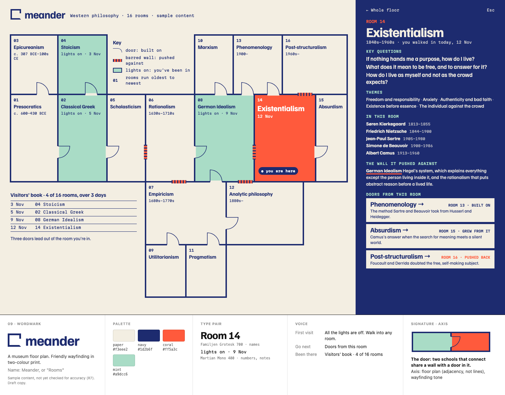
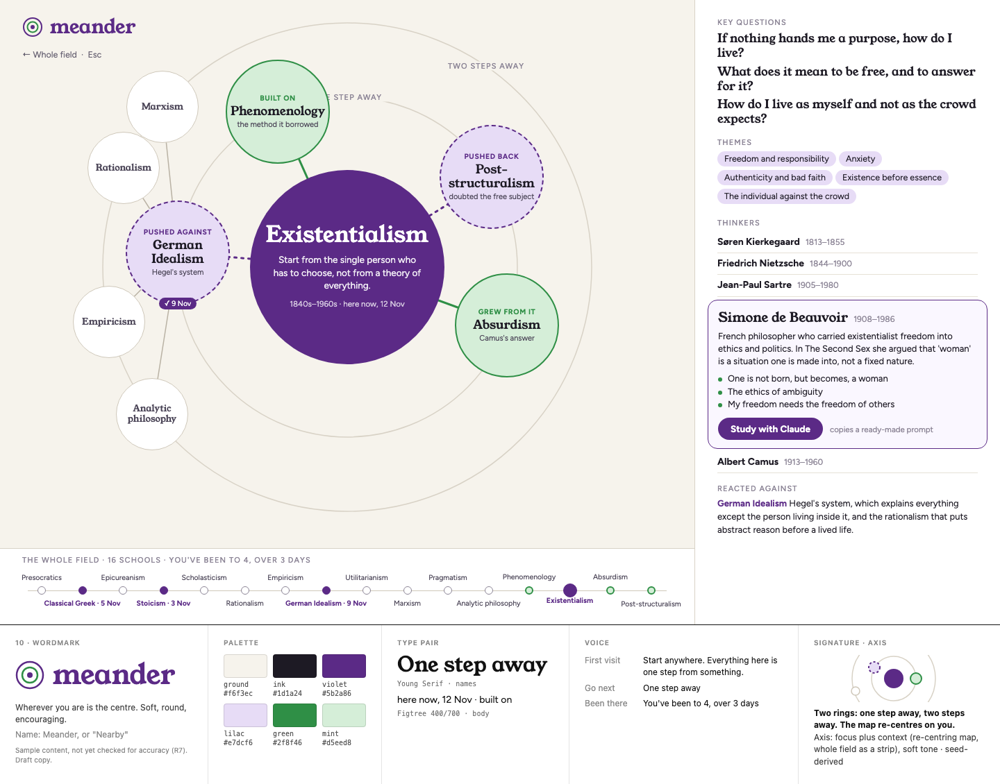

Each shows the whole field of Western philosophy with Existentialism open, at 1440 × 900, with its brand strip below. Sample content, draft copy. Click a thumbnail for the full mockup. The owner picks three.

A public line map. Crisp, confident, built to be read in two seconds.
Axis: network line map, signage tone, side board
A hand-drawn river map. Calm, unhurried, a little literary.
Axis: a single winding path, quiet literary tone
A station departure board. Dry, exact, everything on one page.
Axis: a table instead of a graph, highest density, dark
A star chart you fill in yourself. Quiet, wondering, late-evening.
Axis: scattered sky with a bottom drawer, dark and quiet
A gallery wall text. Still, spacious, sure of itself.
Axis: type as the map, no graph, lowest density
Philosophy as one long argument. Witty, bright, a bit cheeky.
Axis: conversation thread, links as words, playful
A page of stamps to fill. Collectible, tactile, lightly playful.
Axis: collection grid, visits as the hero, playful
A cross-section of ground. Solid, earthy, a little blunt.
Axis: vertical layers (time runs upward), blunt earthy tone
A museum floor plan. Friendly wayfinding in two-colour print.
Axis: floor plan (adjacency, not lines), wayfinding tone
Wherever you are is the centre. Soft, round, encouraging.
Axis: focus plus context (re-centring map, whole field as a strip), soft tone